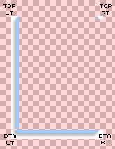
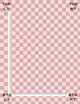

| Step 1 | Step 2 | Step 3 |
|---|---|---|
| First, divide the box into four corners, making sure the top and bottom left are cut such that their long edges can be extended. | Cut out the sections you’ve identified. | Using the concepts put forward in Mountaintop Corners, get rid of the box color completely. |
| Wrap up: Stretch the repeating regions of the top and bottom left corners to a total of 3000px (or whatever width/height you think would be your maximum) tall or wide (depending on the orientation). | ||
|
 |  |